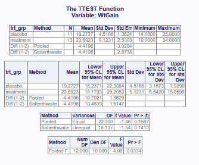

# Create sample data
d1 <- tibble::tribble(
~trt_grp, ~WtGain,
"placebo", 94, "placebo", 12, "placebo", 26, "placebo", 89,
"placebo", 88, "placebo", 96, "placebo", 85, "placebo", 130,
"placebo", 75, "placebo", 54, "placebo", 112, "placebo", 69,
"placebo", 104, "placebo", 95, "placebo", 53, "placebo", 21,
"treatment", 45, "treatment", 62, "treatment", 96, "treatment", 128,
"treatment", 120, "treatment", 99, "treatment", 28, "treatment", 50,
"treatment", 109, "treatment", 115, "treatment", 39, "treatment", 96,
"treatment", 87, "treatment", 100, "treatment", 76, "treatment", 80
)Two Sample t-test
Two Sample t-test in R
The Two Sample t-test is used to compare two independent samples against each other. In the Two Sample t-test, the mean of the first sample is compared against the mean of the second sample. In R, a Two Sample t-test can be performed using the Base R t.test() function from the stats package or the proc_ttest() function from the procs package.
Data Used
The following data was used in this example.
Base R
If we have normalized data, we can use the classic Student’s t-test. For a Two sample test where the variances are not equal, we should use the Welch’s t-test. Both of those options are available with the Base R t.test() function.
Student’s T-Test
Code
The following code was used to test the comparison in Base R. By default, the R two sample t-test function assumes the variances in the data are unequal, and uses a Welch’s t-test. Therefore, to use a classic Student’s t-test with normalized data, we must specify var.equal = TRUE. Also note that we must separate the single variable into two variables to satisfy the t.test() syntax and set paired = FALSE.
d1p <- dplyr::filter(d1, trt_grp == 'placebo')
d1t <- dplyr::filter(d1, trt_grp == 'treatment')
# Perform t-test
stats::t.test(d1p$WtGain, d1t$WtGain, var.equal = TRUE, paired = FALSE)
Two Sample t-test
data: d1p$WtGain and d1t$WtGain
t = -0.6969, df = 30, p-value = 0.4912
alternative hypothesis: true difference in means is not equal to 0
95 percent confidence interval:
-31.19842 15.32342
sample estimates:
mean of x mean of y
75.1875 83.1250 Welch’s T-Test
Code
The following code was used to test the comparison in Base R using Welch’s t-test. Observe that in this case, the var.equal parameter is set to FALSE. The Satterthwaite approximation is used to calculate the effective degrees of freedom.
d1p <- dplyr::filter(d1, trt_grp == 'placebo')
d1t <- dplyr::filter(d1, trt_grp == 'treatment')
# Perform t-test
stats::t.test(d1p$WtGain, d1t$WtGain, var.equal = FALSE, paired = FALSE)
Welch Two Sample t-test
data: d1p$WtGain and d1t$WtGain
t = -0.6969, df = 29.694, p-value = 0.4913
alternative hypothesis: true difference in means is not equal to 0
95 percent confidence interval:
-31.20849 15.33349
sample estimates:
mean of x mean of y
75.1875 83.1250 Procs Package
Student’s T-Test and Welch’s T-Test
Code
The following code from the procs package was used to perform a two sample t-test. Note that the proc_ttest() function performs both the Student’s t-test and Welch’s t-test (the Satterthwaite approximation is used to calculate the effective degrees of freedom) in the same call. The results are displayed on separate rows. This output is similar to SAS.
# Perform t-test
procs::proc_ttest(d1, var = WtGain, class = trt_grp)$Statistics
VAR CLASS METHOD N MEAN STD STDERR MIN MAX
1 WtGain placebo <NA> 16 75.1875 33.81167 8.452918 12 130
2 WtGain treatment <NA> 16 83.1250 30.53495 7.633738 28 128
3 WtGain Diff (1-2) Pooled NA -7.9375 NA 11.389723 NA NA
4 WtGain Diff (1-2) Satterthwaite NA -7.9375 NA 11.389723 NA NA
$ConfLimits
VAR CLASS METHOD MEAN LCLM UCLM STD LCLMSTD
1 WtGain placebo <NA> 75.1875 57.17053 93.20447 33.81167 24.97685
2 WtGain treatment <NA> 83.1250 66.85407 99.39593 30.53495 22.55632
3 WtGain Diff (1-2) Pooled -7.9375 -31.19842 15.32342 NA NA
4 WtGain Diff (1-2) Satterthwaite -7.9375 -31.20849 15.33349 NA NA
UCLMSTD
1 52.33003
2 47.25868
3 NA
4 NA
$TTests
VAR METHOD VARIANCES DF T PROBT
1 WtGain Pooled Equal 30.00000 -0.6969002 0.4912306
2 WtGain Satterthwaite Unequal 29.69359 -0.6969002 0.4912856
$Equality
VAR METHOD NDF DDF FVAL PROBF
1 WtGain Folded F 15 15 1.226136 0.6980614Viewer Output:

Example with unequal variances
# Create sample data
d2 <- tibble::tribble(
~trt_grp, ~WtGain,
"placebo", 14, "placebo", 15, "placebo", 15, "placebo", 15,
"placebo", 16, "placebo", 18, "placebo", 22, "placebo", 23,
"placebo", 24, "placebo", 25, "placebo", 25,
"treatment", 10, "treatment", 12, "treatment", 14, "treatment", 15,
"treatment", 18, "treatment", 22, "treatment", 24, "treatment", 27,
"treatment", 31, "treatment", 33, "treatment", 34, "treatment", 34,
"treatment", 34,
)
d2p <- dplyr::filter(d2, trt_grp == 'placebo')
d2t <- dplyr::filter(d2, trt_grp == 'treatment')
# Perform t-test
stats::t.test(d2p$WtGain, d2t$WtGain, var.equal = FALSE, paired = FALSE)
Welch Two Sample t-test
data: d2p$WtGain and d2t$WtGain
t = -1.5379, df = 18.137, p-value = 0.1413
alternative hypothesis: true difference in means is not equal to 0
95 percent confidence interval:
-10.453875 1.614714
sample estimates:
mean of x mean of y
19.27273 23.69231 procs::proc_ttest(d2, var = WtGain, class = trt_grp)$Statistics
VAR CLASS METHOD N MEAN STD STDERR MIN MAX
1 WtGain placebo <NA> 11 19.27273 4.518648 1.362424 14 25
2 WtGain treatment <NA> 13 23.69231 9.123090 2.530290 10 34
3 WtGain Diff (1-2) Pooled NA -4.41958 NA 3.029355 NA NA
4 WtGain Diff (1-2) Satterthwaite NA -4.41958 NA 2.873772 NA NA
$ConfLimits
VAR CLASS METHOD MEAN LCLM UCLM STD
1 WtGain placebo <NA> 19.27273 16.23706 22.308396 4.518648
2 WtGain treatment <NA> 23.69231 18.17928 29.205336 9.123090
3 WtGain Diff (1-2) Pooled -4.41958 -10.70208 1.862918 NA
4 WtGain Diff (1-2) Satterthwaite -4.41958 -10.45387 1.614714 NA
LCLMSTD UCLMSTD
1 3.157257 7.929927
2 6.542040 15.059805
3 NA NA
4 NA NA
$TTests
VAR METHOD VARIANCES DF T PROBT
1 WtGain Pooled Equal 22.00000 -1.458918 0.1587188
2 WtGain Satterthwaite Unequal 18.13738 -1.537902 0.1413355
$Equality
VAR METHOD NDF DDF FVAL PROBF
1 WtGain Folded F 12 10 4.076307 0.03338774Viewer Output:

NoteSession Info
─ Session info ───────────────────────────────────────────────────────────────
setting value
version R version 4.4.2 (2024-10-31)
os Ubuntu 24.04.3 LTS
system x86_64, linux-gnu
ui X11
language (EN)
collate C.UTF-8
ctype C.UTF-8
tz UTC
date 2026-02-10
pandoc 3.6.3 @ /opt/quarto/bin/tools/ (via rmarkdown)
─ Packages ───────────────────────────────────────────────────────────────────
! package * version date (UTC) lib source
P cli 3.6.3 2024-06-21 [?] RSPM (R 4.4.0)
P common * 1.1.3 2024-04-05 [?] RSPM (R 4.4.0)
P crayon 1.5.3 2024-06-20 [?] RSPM (R 4.4.0)
P dplyr * 1.1.4 2023-11-17 [?] RSPM (R 4.4.0)
P fansi 1.0.6 2023-12-08 [?] RSPM (R 4.4.0)
P fmtr 1.6.5 2024-06-13 [?] RSPM (R 4.4.0)
P generics 0.1.3 2022-07-05 [?] RSPM (R 4.4.0)
P glue 1.8.0 2024-09-30 [?] RSPM (R 4.4.0)
P jpeg 0.1-10 2022-11-29 [?] RSPM (R 4.4.0)
P lifecycle 1.0.4 2023-11-07 [?] RSPM (R 4.4.0)
P magrittr 2.0.3 2022-03-30 [?] RSPM (R 4.4.0)
P mvtnorm 1.3-1 2024-09-03 [?] RSPM (R 4.4.0)
P pillar 1.9.0 2023-03-22 [?] RSPM (R 4.4.0)
P pkgconfig 2.0.3 2019-09-22 [?] RSPM (R 4.4.0)
P procs * 1.0.6 2024-03-06 [?] RSPM (R 4.4.0)
P R6 2.5.1 2021-08-19 [?] RSPM (R 4.4.0)
P Rcpp 1.0.13 2024-07-17 [?] RSPM (R 4.4.0)
P reporter 1.4.4 2024-03-19 [?] RSPM (R 4.4.0)
P rlang 1.1.6 2025-04-11 [?] RSPM (R 4.4.0)
P sasLM 0.10.5 2024-10-02 [?] RSPM (R 4.4.0)
P stringi 1.8.4 2024-05-06 [?] RSPM (R 4.4.0)
P tibble * 3.2.1 2023-03-20 [?] RSPM (R 4.4.0)
P tidyselect 1.2.1 2024-03-11 [?] RSPM (R 4.4.0)
P utf8 1.2.4 2023-10-22 [?] RSPM (R 4.4.0)
P vctrs 0.6.5 2023-12-01 [?] RSPM (R 4.4.0)
P withr 3.0.1 2024-07-31 [?] RSPM (R 4.4.0)
P zip 2.3.1 2024-01-27 [?] RSPM (R 4.4.0)
[1] /home/runner/work/CAMIS/CAMIS/renv/library/linux-ubuntu-noble/R-4.4/x86_64-pc-linux-gnu
[2] /opt/R/4.4.2/lib/R/library
P ── Loaded and on-disk path mismatch.
──────────────────────────────────────────────────────────────────────────────